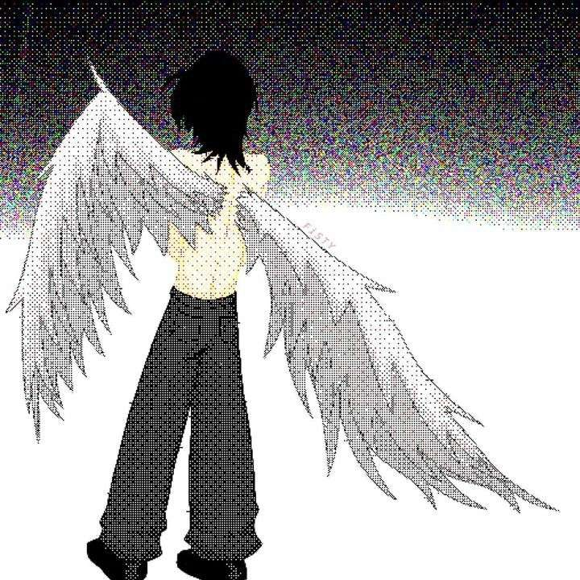

read-only archival mirror
_
| name | size | modified | type |
|---|
| name | size | modified | type |
|---|
[00:00:01] connection re-established after unknown interval.
[00:00:04] you are the first visitor since the archive forgot itself.
[00:00:09] type help in the terminal if you want a way out. or don't.
[00:00:14] some doors respond to ↑↑↓↓←→←→ b a. old muscle memory helps.
[00:00:19] real signal, off the archive: ★. we're still here.
[00:00:26] if it's ever too much, there's a word that ends this place. starts with n. we only say it once, so we won't.

builds small worlds that hide until someone finds them.
terminal toys, trapdoors, the occasional archive that isn't what it says it is. if you're reading this, you found the real one.
—
AETHERLANE
A fatal exception has occurred at 0028:C0011E36 in VXD ARCHION9(01).
The current application will be terminated.
* Press any key to return to the desktop.
* Press CTRL+ALT+DEL to restart your computer. You will
lose any unsaved information in all applications.
Press any key to continue_